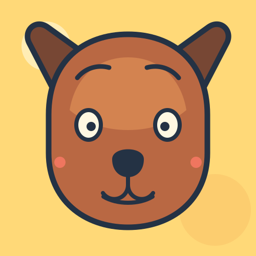

Charme seit dem ersten Wuff.
Eine Legende auf vier Pfoten
Bello macht aus einem normalen Tag ein kleines Abenteuer.

Erst schnüffeln, dann staunen, danach eine wohlverdiente Pause im Garten. Jeder Mensch ist ein möglicher Lieblingsmensch, besonders mit Käse.